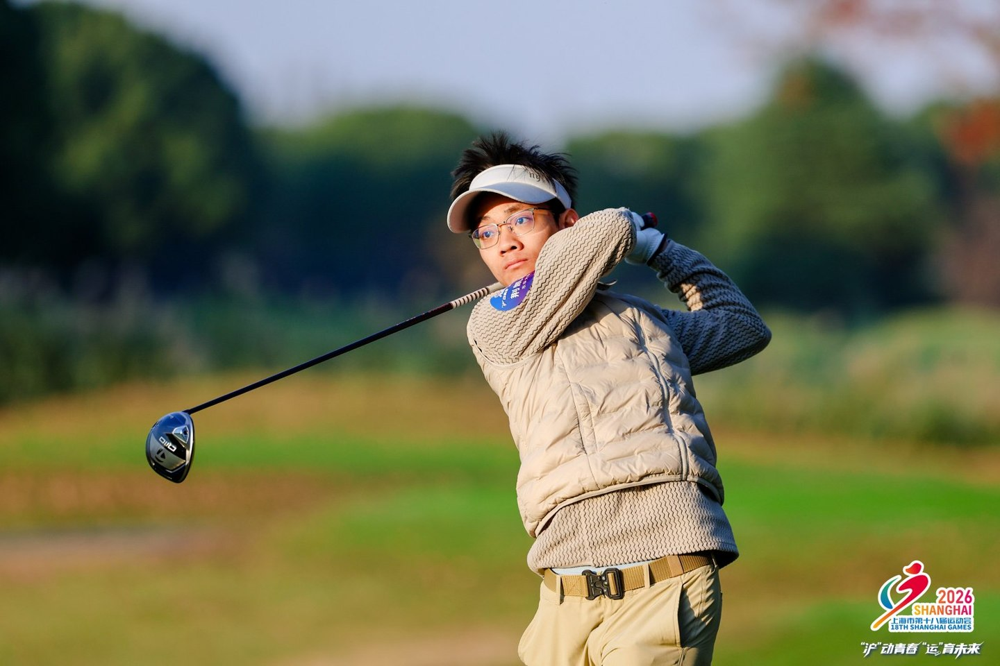
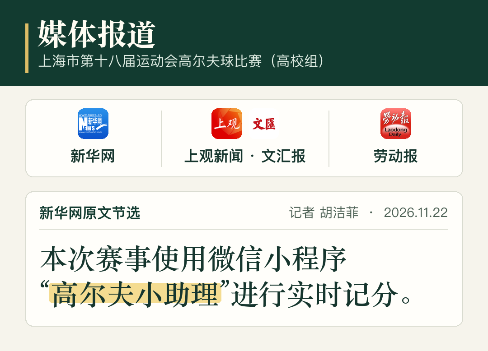
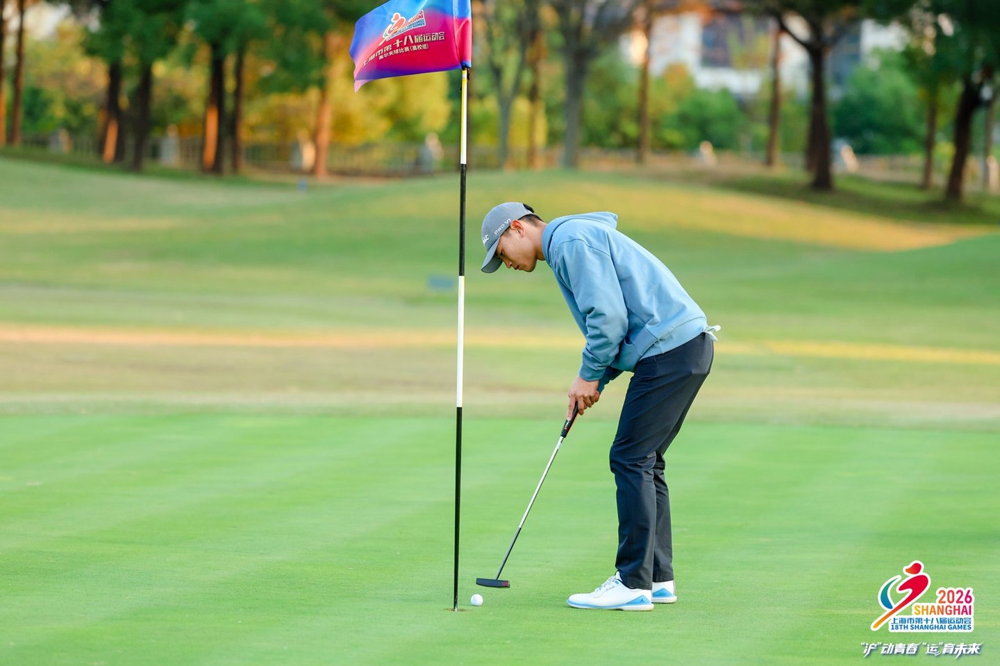
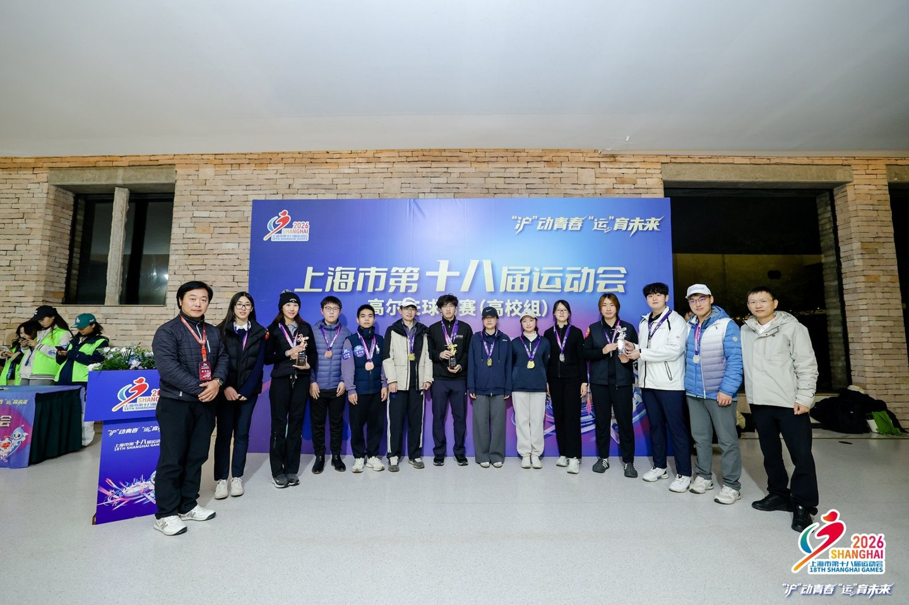

2026.11.20 上海协和高尔夫俱乐部
高尔夫小助理助力上海市第十八届运动会高尔夫球比赛（高校组）
11月20日，上海市第十八届运动会高尔夫球比赛（高校组）在上海协和高尔夫俱乐部举行。来自10所高校的53名学生运动员，在18洞中角逐男子个人、女子个人和混合团体三个项目。
祝贺取得佳绩的球员和校队！混合团体赛中，复旦大学、同济大学和上海财经大学分获前三名。赛事报道｜新华网

比赛现场 · 孟宪青 摄 · 赛事相册
从逐洞记分，到实时看赛
赛前，高尔夫小助理为球员和球童分别制作了操作指引。比赛当天，球员扫码认领自己的姓名，球童逐洞录入成绩，裁判现场核对。各组的成绩汇入同一个赛事播报页面。
小助理的原创动态榜单随赛况更新。个人名次升降、抓鸟高光都能实时看到。场内球员可以跟进队友的表现，场外的老师、同学和校友也能从分组表找到本校球员，看到他们打到了哪一洞。

新华网｜胡洁菲 · 上观新闻｜文汇报 袁婧 · 《劳动报》

个人榜赛中回放 · 依据本场小程序真实回放记录制作
个人的成绩，学校的荣誉
混合团体赛取每校成绩最好的两名男子球员和两名女子球员，以四人的总杆之和排名。随着各组成绩录入，原创动态榜单会更新计入团体成绩的球员、学校排名和杆数差距。
同一所学校的队员可能分在不同组。谁的成绩计入团体？校队离前一名还差几杆？打开榜单就能看到。专业记分让每洞成绩有据可查，动态播报让场内球员和场外观众都能感受到你追我赶的比赛氛围。

学校团体榜赛后成绩 · 依据本场小程序公开榜单制作

果岭上的推杆 · 孟宪青 摄 · 赛事相册
从市运会赛场，到校园练习赛
高尔夫小助理团队还与上海财经大学师生共创了练习赛模块，把同学们在组织练习、记录成绩和交流切磋时的实际需求，融入了产品设计。
支持大学生高尔夫，我们从自己擅长的事做起。把正式比赛的成绩记清楚，把精彩的赛况呈现出来，也让同学们平时想打场球、办场练习赛时，组织起来更方便。

赛后合影 · 孟宪青 摄 · 赛事相册
高尔夫小助理
让一起打球更简单、更尽兴。
线上榜单用于跟进比赛进程，正式成绩以组委会公布为准。